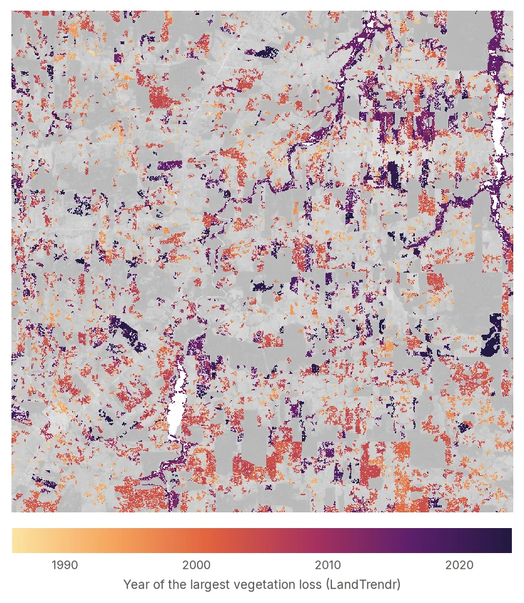
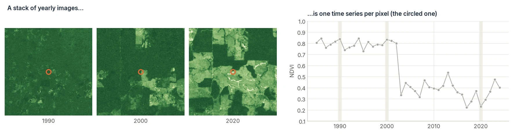

Find when and where the landscape changed.¶
Zeit is an ultra-fast Python library for analysing satellite image time series. Reference algorithms such as LandTrendr, CCDC and BFAST are re-engineered in parallel C++ and validated against their original implementations. Use them to detect deforestation, fires, regrowth, crop cycles and long-term trends. Full scenes run on a laptop using every core, and the same code scales out in parallel to your own cluster or the cloud with Dask.

What is Zeit?¶
Every satellite pixel has a history. Stack images of the same place over time and each pixel becomes a time series: a line that stays flat while a forest stands, drops when it is cleared, and climbs back as it regrows. Most land-change questions come down to reading those lines. Did something change? When? How much? Was it sudden or gradual?

Zeit gives you the standard scientific methods for reading these time series, plus the plumbing around them. It can pull imagery from cloud catalogs, mask clouds, fill gaps, run the analysis in parallel, and write maps back out as GeoTIFF or Zarr.
Gallery
What you can do with Zeit¶
Every image below was produced by Zeit itself. Click one to open its tutorial.


Workflow
How a Zeit analysis fits together¶
Get the data
Stream a cube from a STAC catalog, Earth Engine or local GeoTIFFs.
build_time_series · download_gee_timeseries
Clean it
Mask clouds, composite to a regular time step, smooth noise.
tmask · regularize_time_series · smooth
Analyse every pixel
Run change detection, trends, phenology or a classifier.
landtrendr · ccdc
Map the result
Turn per-pixel output into maps, look at them, and write GeoTIFF or Zarr.
extract_events · plot · save_raster
The same analysis in three styles. Pick the one that fits your data:
import zeit
ndvi = zeit.load_raster("ndvi_1985_2024.tif", start_year=1985) # (time, y, x), georeferenced
lt = zeit.landtrendr(ndvi) # looks for NDVI drops (direction="loss")
loss = zeit.extract_events(lt, min_magnitude=2000) # greatest loss per pixel
zeit.plot(ndvi, fit=lt) # page through the years, click a pixel to see its fit
zeit.save_raster(loss, "lt_results") # one GeoTIFF per map: yod.tif, magnitude.tif, ...
import zeit # registers the .zeit accessor on xarray objects
cube = zeit.build_time_series(
source="earth_search", collection="sentinel-2-l2a",
bbox=[-63.2, -10.2, -63.0, -10.0],
start_date="2019-01-01", end_date="2024-12-31",
bands=["red", "nir"], apply_cloud_mask=True,
)
ndvi = (cube.sel(band="nir") - cube.sel(band="red")) / (cube.sel(band="nir") + cube.sel(band="red"))
ndvi_16d = zeit.regularize_time_series(ndvi, freq="16D", method="median")
trend = ndvi_16d.zeit.mann_kendall(method="seasonal", period=23)
trend.to_zarr("ndvi_trend.zarr", consolidated=True) # computed chunk by chunk, in parallel
Why Zeit
Built for trustworthy results at scale¶
-
Faithful to the originals
Each algorithm is ported from its reference implementation (IDL, MATLAB, R) and tested against it. You get the published method, not an approximation.
-
Fast by default
The per-pixel work runs in C++ (Eigen + OpenMP), outside the Python GIL. A laptop can process scenes that used to need a cloud platform.
-
Scales without rewrites
The
.zeitxarray accessor maps every algorithm over Dask chunks, so the same script runs on one machine or a cluster. -
One toolbox, end to end
Data access, cloud masking, smoothing, change detection, trends, phenology, segmentation, deep learning and plotting all use the same array conventions.
Where to go next¶
-
New to Zeit?
Install it and produce your first change map in five minutes, then learn the few concepts every tutorial builds on.
-
Not sure which method to use?
A short guide that maps common questions ("when was this cleared?", "is it getting greener?") to the right algorithm.
-
Ready to go deeper?
Step-by-step tutorials for every algorithm, each with real outputs, parameter guidance and references.
-
Looking something up?
Every public function, with signatures, parameters and a runnable example.